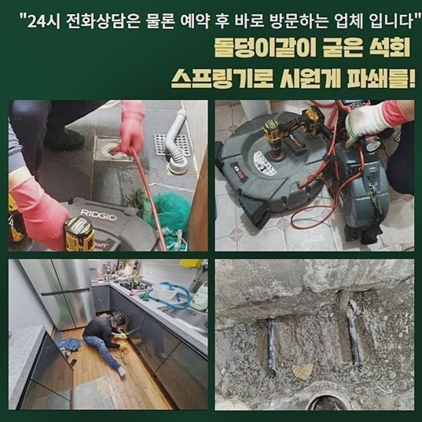
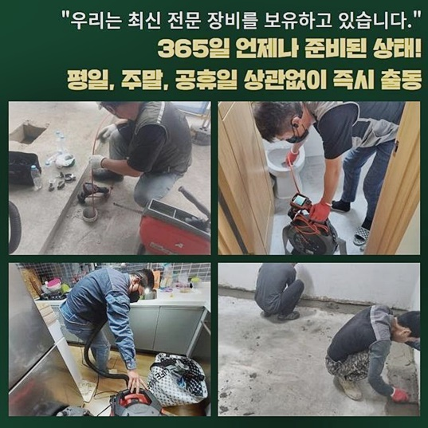
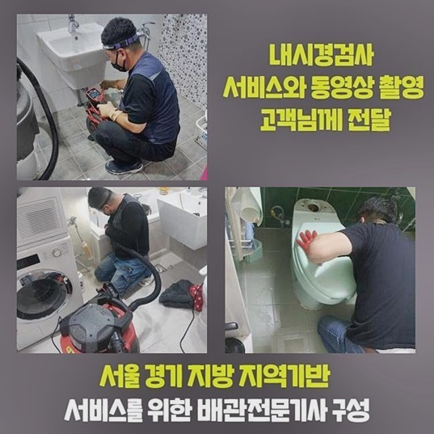
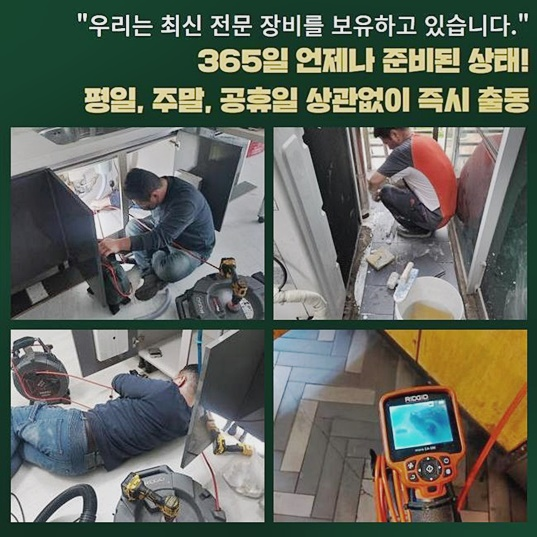
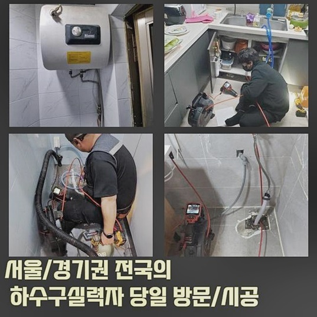
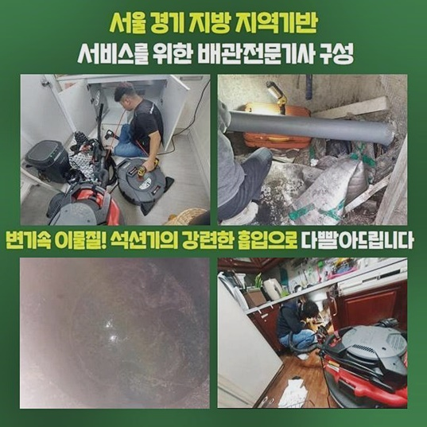

🏠 양주 마전동변기뚫음 광적면 횡주관청소 설비
양주 광적면 싱크대막힘 전문 시공 후기

📋 작업 개요
- 위치: 양주 광적면, 광적면, 양주
- 서비스 유형: 싱크대막힘, 변기막힘, 하수구막힘, 배관막힘, 역류해결, 뚫는업체, 배관청소
- 작업 일시: 2024. 8. 6. 16:51
- 업체명: 하수구수사대 (010-5615-2118)
🔍 문제 상황
양주 마전동변기뚫음 광적면 횡주관청소 설비
어디에서든지 하수관은 꼭필요한 시스템이에요
갑작스레 배관이막혀 원활하게 배수되지못하면 불편함이 이만저만이 아닐겁니다
인터넷검색으로 방법을알아내 조치를 취할순있어도 오염물로인해 완전하게 막힌상태라면 전문업체의 지원을받는게 옳은방안입니다
저희업체로 의뢰하신분중 갑작스럽게 발생된 막힘으로인하여 상당한불편함을 경험하신분도 계셨어요
이분은 세대리모델링 시공을진행한지 며칠도지나지 않아서 이러한일이 발생된건지 당황하셨어요
빠른해결을 원하였고 저흰 첨단도구들을 준비해서 조속한출동을 해드렸습니다
일반적으로 가정집의경우 화장실쪽이나 씽크대쪽에서 배수구막힘문제가 빈번하게 발생하고있어요
이런상황이라면 다양스러운 곤란함이 생길수가있죠
주방쪽에서 물이용이 어려운경우라면 일상생활이 진행될수없는 상태로 이어지게될텐데요
막힘문제를 바로잡고자 고객분께서 주말에 내방하기를 바라셨고 그에맞춰서 시간을조정해 방문해드렸어요
주말하고 쉬는날까지도 포함시켜 새벽시간까지도 작업에 착수할수있기에 시간관계없이 연락만주신다면 내방할준비가 되어있답니다

🔎 원인 분석
💡 전문가 진단: 정밀 진단 장비를 사용하여 슬러지의 고착 여부를 판명하고 타격/세척 작업을 실시했습니다.
요근래부터 배수상태가 느려지기시작했고 어제부터는 막히게되었다고 말씀하셨는데요
셀프조치로 뚫어보고자 했으나 일시로 해결만됐고 같은현상들이 발현하고있다고 말하셨어요
빠른 내방을해드린후 씽크대를 점검해보았죠
원활하게 배수되지않다보닌 잔해물질들도 쌓이고쌓여 역류까지 발생한걸로 보였습니다
하수관이 막히게된 이유가 무엇인지 알아낸후 해결해보고자 배관내시경을 통하여 배관안을 살폈어요
하수구입구쪽에 오염물질들은 쉬운방법으로 제거할수있었지만 안쪽깊이에 자리잡고있는 오염물의경우 플렉스샤프트를 활용해서 외부쪽으로 끌어내야했어요
다행인것은 오랫동안 퇴적된상태가 아니었으므로 쉽게없앨수가 있었답니다
자세히보니 막고있었던 원인의물체는 장판조각인것을 확인할수있었는데 이것들이 이곳을통해 왜나왔는지 알수가없었네요
고객분도 이것의정체를 모르는상태였고 오염물을 확인하시더니 깜짝놀라셨는데요
플렉스샤프트기로 분쇄과정에 착수할때는 작업자분의 실력또한 중요하다고할수있죠
안심해도좋아요 확실하고깔끔히 해결해드릴것을 약속합니다
다음장소에 방문해서 문제점을 파헤쳐보니 하수관에서 역류현상이 발발되고 있었네요
막힘증세를 신속하게 뚫고자한다면 근원적인원인을 알아내야해요

🔧 작업 과정
누누히 강조드리지만 물이확실히 흘러나가야하는데 역류현상이 발생한다면 영업장이든 가정이든불편을 일으킨답니다
문제를봤더니 배관내부에서 발생하게된것을 알수있었네요
현장경험과 노하우를바탕삼아 전문장비를 활용하여 세심한 작업으로 진행하였어요
내시경과 플렉스샤프트와 같은 전문기기들을 활용하게되면 하수도내부와 오염상태까지 자세히 확인할수있고 이런과정으로 작업을 시작해보기전 필요정보를 얻을수있죠
오염물이퇴적된 배관이라면 고약한냄새를 발생시키기에 빠르게대처할 필요가있어요
하수구내부를 파악하고 정확한조치를 취하여 하수구를 뚫어낼수있었죠
다음장소에서는 씽크대막힘이 발현된곳인데 조속하게 처리해줄것을 원하셨는데요
음식을만들때나 설거지를해볼때 배수되지못하고 역류까지보이는 상태임을 전해주셨죠
고객의 일상편의를 위협하게되는 역류증세가 계속해서 나타나면 2차적인 문제로 이어질수있기에 빠른대응으로 원인탐색을위해 스케일링과정에 들어가기로했죠
배관내시경끝에는 소형카메라및 조명까지 달려있으므로 안속깊은곳까지 점검할수있죠
싱크대막힘에서 흔하게보이는 기름이물은 혼자서직접 제거하기란 어렵죠
이런상태에선 물을통해 누그러뜨린뒤 석션작업으로 흡입해내는 방식으로 진행할수있어요
고착이물이 쌓이게되었다면 분쇄장비를 투입하여 오염물을부수고 빨아올릴수있죠
하수구길이가 깊어도 청소할수있습니다
카메라기계를 통해서 엘보배관과 구부러진곳까지 파악이가능하며 스케일링기계로 오염물을제거해 원활한 배수상태로 복원시켜줍니다
고객님에게 작업내용을 전달하는게 중요사항중 하나에요
하수구시스템이 무너졌을때 내버려두게되면 2차적인문제들로 연결되어 손해를 보실수있기때문에 신속하게 대처하시는걸 추천드려요!
혼자서해결하려고 날카로운걸로 하수구내부에 집어넣거나 주변에서 쉽게구하는 용액제품들을 사용하게된다면 잠깐동안만의 해결만 보실수있으실거에요
전문업체에게 의뢰하여 무슨원인으로 막히게되었는가 꼼꼼하게살펴보고 상황과알맞게 대처해야합니다
그러므로 배관막힘은 신속하고 전문적인조치가 필요하겠습니다


✅ 작업 완료
가볍게여기지마시고 문제발견즉시 처리해보실것을 권고드릴게요
성의를다한 작업으로 여러가지의 배관문제를 확실하게 타파시켜드릴것을 약속할게요!
배관과관련된 문제로인해 곤란하다면 문의바래요
어떤곳이라도 1시간안쪽으로 도착할수있고 작업계획에있어 분명하게 공개해드리니 염려않으셔도 된답니다
이것외에도 궁금하신게 있다면 밤낮관계없이 연락주신뒤 질문하셔도되니 마음편히 연락주신다면 상세한응대로 맞이하겠습니다
앞으로발생할 하수도문제 저희들과함께 해결하시는건 어떨까요



⚠️ 주방 싱크대 배관 막힘 예방 수칙
- ✅ 기름기가 묻은 식기나 프라이팬은 설거지 전 키친타올로 반드시 기름때를 닦아내세요.
- ✅ 주기적으로 싱크대 개수대에 뜨거운 물을 가득 받아 한 번에 내려 배관 내부 기름을 씻어내세요.
- ✅ 배수구 거름망을 미세한 필터로 사용하시고 음식물 찌꺼기가 틈으로 새어 들지 않게 관리하세요.
- ✅ 베이킹소다와 식초를 뜨거운 물과 함께 일주일에 한 번씩 부어주면 배관 살균과 막힘 예방에 좋습니다.
💡 핵심 정리
- 확실한 장비 작업(내시경 점검 및 샤프트 스케일링)으로 원인을 뿌리 뽑습니다.
- 작업 후 1년 이내에 동일한 부위 재발 시 100% 무상 A/S 서비스를 보장합니다.
- 서울 · 경기 · 인천 전 지역에 24시간 언제든 긴급 출동할 수 있도록 항시 대기 중입니다.
❓ 자주 묻는 질문 (FAQ)
🚨 양주 광적면 싱크대막힘 문제로 고민이신가요?
정확한 원인 진단과 확실한 시공으로 재발 없는 해결을 약속드립니다.
24시간 긴급 출동 | 서울 · 경기 · 인천 전지역 | 1년 내 재발 시 무상 A/S